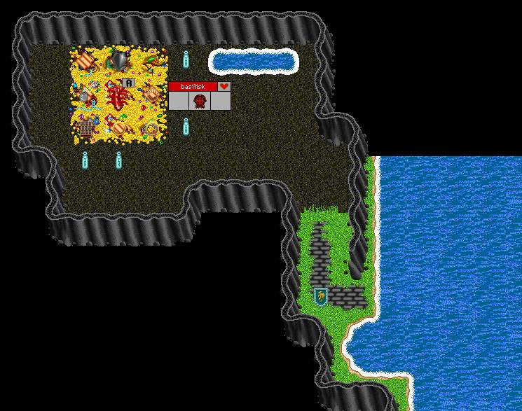
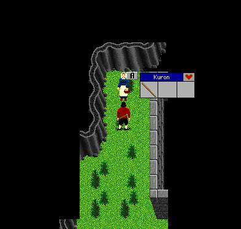

| The Basilisk Lair |
 |
 |
| Talk to Kuron to get enchanted to visit the Basilisk. She is located in the lower part of Volcano Town. Kur,secret She will tell you with a clue to kill a specific monster and bring it back to her. Most monsters will be in the Maeling Forest AKA the Badlands. Once back, type: Kur,secret When enchanted, you will be allowed into the lair. Monster clues: Forces to ground: Beshita Frogfaced one: Bullywog |
| Enter the Basilisk Lair and kill it. Take the corpse and tan it for scales. You can trade the scales for a shield with Bavic in the lower part of Volcano Town. |
| Back to Volcano Town. |
| by Seville__BORED |
| To Maeling. |